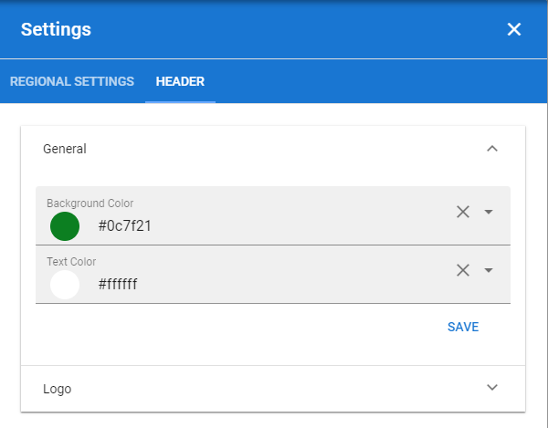

Header settings¶
Here you can change the default settings for the Header in the tenant. Additional settings, sometimes overriding the Tenant Settings, can be made for each Business Profile.
In Omnia 6.5 and later, the header settings is quite different. See this page for more information: Header settings in Omnia 6.5

Logo¶
Set the following here:
Text: A text can be displayed by the logo, see example below. Different texts can be added for all tenant languages, if needed.
Url: Add the Url to the logo here.
ADD IMAGE: Another way is to use this option to start the Media Picker and select a logo image.
To remove an image, click the X.
In this example the text “Adventrix Group” is displayed to the right of the logo: